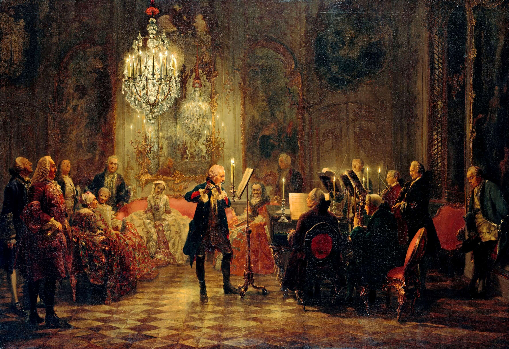
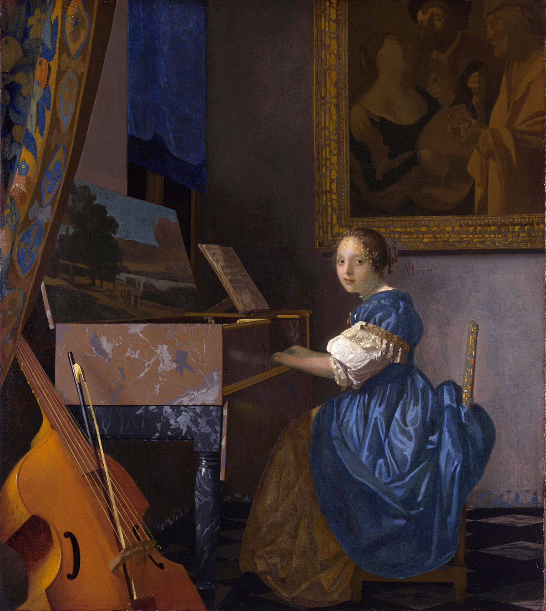

El Clavicordio.
En la actualidad conocemos cientos de instrumentos de varias formas y tamaños y que pueden producir una gran cantidad de sonidos. Sin embargo, cuando recordamos que los instrumentos musicales son un invento del ser humano para producir sonido, también podemos percatarnos de que esos instrumentos tuvieron que comenzar en algún punto de la historia y que, algunos de ellos, habrán pasado por varias épocas y transformaciones hasta llegar a ser como los conocemos hoy.
Quizás algunos de ellos, ya no los utilicemos con tanta frecuencia, como es el caso del clavicordio.

Historia del clavicordio.
 Impresionantemente, los principios de funcionamiento del clavicordio tienen su origen en la antigua Grecia (en la época de los años 500 a. C.), gracias a los experimentos del filósofo y matemático Pitágoras. El hecho de tensar una cuerda y golpearla o pulsarla para crear sonidos de distintas frecuencias es una contribución de Pitágoras al estudiar las proporciones numéricas. Este principio físico se utilizó luego para la primera aparición del clavicordio a comienzos del siglo XIV, designado como uno de los mejores instrumentos para componer y acompañar melodías.
Es a partir del siglo XVI que el clavicordio florece, principalmente en países alemanes, escandinavos y en la península ibérica. Muchos compositores y músicos se dedicaron a dominarlo como su instrumento principal y también existían muchos clavicordios en casas como una actividad vespertina de diversión familiar en el hogar.
El clavicordio fue perdiendo popularidad en el año 1700, reemplazado por a la alta popularidad del piano. Alrededor del año 1850, quedó prácticamente en desuso. A pesar de algunos intentos de traerlo de vuelta e incluirlo en el repertorio, el clavicordio es hoy en día un instrumento más bien histórico que de uso común.
Así, el clavicordio ha quedado como una particularidad en la música moderna. Algunos músicos de la actualidad han utilizado el clavicordio como parte de la experimentación en sus canciones. Entre ellos: Stevie Wonder, Björk, Tori Amos, Oscar Peterson y The Beatles.
No confundas el clavicordio con otros instrumentos.
Hay instrumentos que podrán verse como un clavicordio pero cuyo funcionamiento y/o sonido es diferente. Estos son algunos instrumentos que tienden a confundirse con el clavicordio:
- El clave (harpsicordio, clavecín, clavicémbalo, clavicímbano).
- La espineta.
- El virginal.
El sonido del clavicordio.
El sonido del clavicordio es provocado por la vibración de cuerdas de diferente longitud que están tensadas. A diferencia del piano, en donde sus cuerdas se encuentran agrupadas, las cuerdas son individuales y el mecanismo de sus teclas es en forma de palancas, que tienen en su extremo una pieza metálica llamada “tangente” que tiene contacto directo con las cuerdas. El sonido del clavicordio es suave, brillante y nasal.
Dentro de sus características se encuentra la sensibilidad al tacto de las teclas, es decir que el sonido aumenta de intensidad dependiendo de la presión con la que se tocan las teclas. Esto le permite tener un efecto particular llamado “bebung”, en donde una tecla se mantiene presionada y esta misma tensión afecta el sonido de las teclas en cuanto a afinación, es un efecto similar al vibrato. También es importante mencionar que su volumen en general es bastante bajo.
El clavicordio es mucho más pequeño en tamaño a comparación de un piano, tanto en tamaño general como en las propias teclas, las cuales son tradicionalmente agrupadas en solo 4 octavas.
{kind=link}